Systèmes de chauffage pris en charge
BSB-LAN prend en charge les systèmes de chauffage qui communiquent à l'aide du BSB (Boiler System Bus), du LPB (Local Process Bus) ou du PPS (Punkt-zu-Punkt-Schnittstelle). Ces contrôleurs sont généralement fabriqués par Siemens, les modèles plus anciens peuvent encore porter le nom de "Landis & Stafea" ou "Landis & Gyr".
Nous avons compilé une liste de modèles fonctionnels de différents fabricants de systèmes de chauffage qui ont été confirmés comme fonctionnant avec BSB-LAN, bien qu'il n'y ait pas de garantie à 100 % que les fabricants conservent le nom du modèle mais changent le contrôleur pour un système différent. Assure-toi donc toujours de vérifier que les bons connecteurs sont disponibles.
Voici quelques exemples de contrôleurs de chauffage et des connecteurs utilisés pour se connecter à BSB-LAN. Certains connecteurs ont trois broches, d'autres en ont deux. S'il y a trois broches, assure-toi de choisir les deux bonnes (CL+ et CL-) car la troisième broche (G+) sert à fournir l'éclairage de fond pour l'unité de la pièce. Elle n'endommagera pas BSB-LAN, mais elle peut être trompeuse car la LED de BSB-LAN s'allumera même si elle n'est pas connectée à la bonne broche.
D'ailleurs : Si tu n'as qu'un seul connecteur et qu'il est déjà occupé par une unité de pièce, il n'y a aucun problème à ajouter BSB-LAN au même connecteur. Fais simplement attention lorsque tu ajoutes les fils pour BSB-LAN.
| Contrôleur | Image | Remarques |
|---|---|---|
| LMS14 LMS15 |
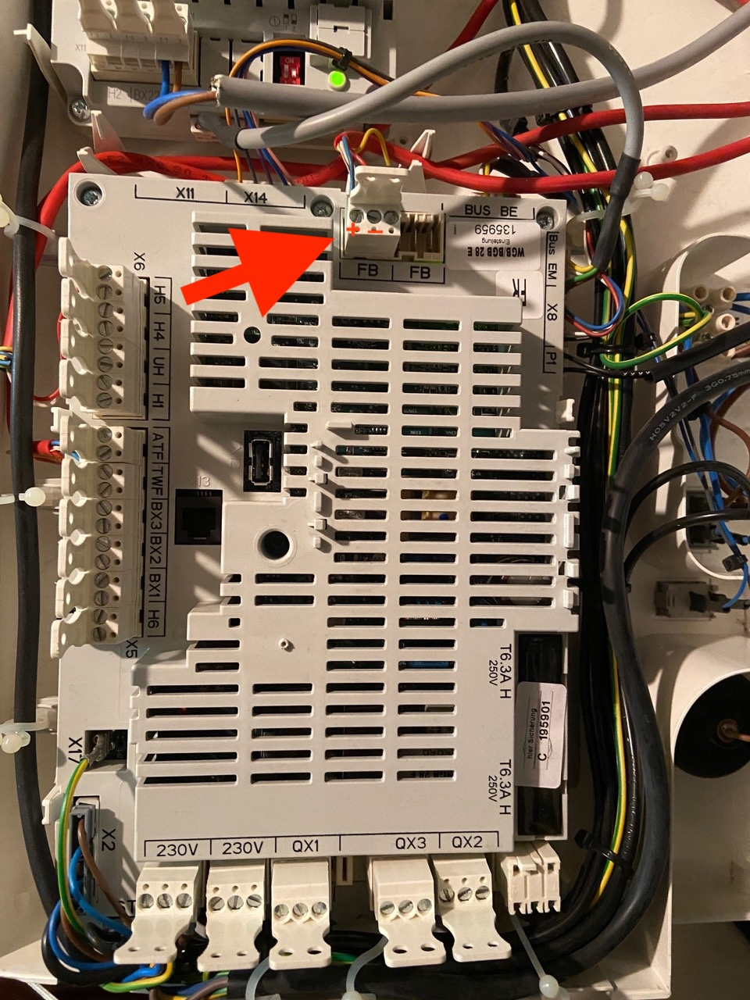 | Connexion BSB : + = Gauche - = Centre |
| LMS14 LMS15 |
 |
Connexion BSB : CL+/CL- |
| LMS14 LMS15 Baxi Luna Platinum, Chappee Klista |
   |
Connexion BSB : Bornier M2 Broche 2 : CL- Broche 3 : CL+ Consultez les instructions détaillées ici pour Baxi Luna Platinum. |
| LMU54 LMU64 |
 |
Connexion LPB : via le plugin OCI420 supplémentaire, voir détails ci-dessous. |
| LMU74 LMU75 |
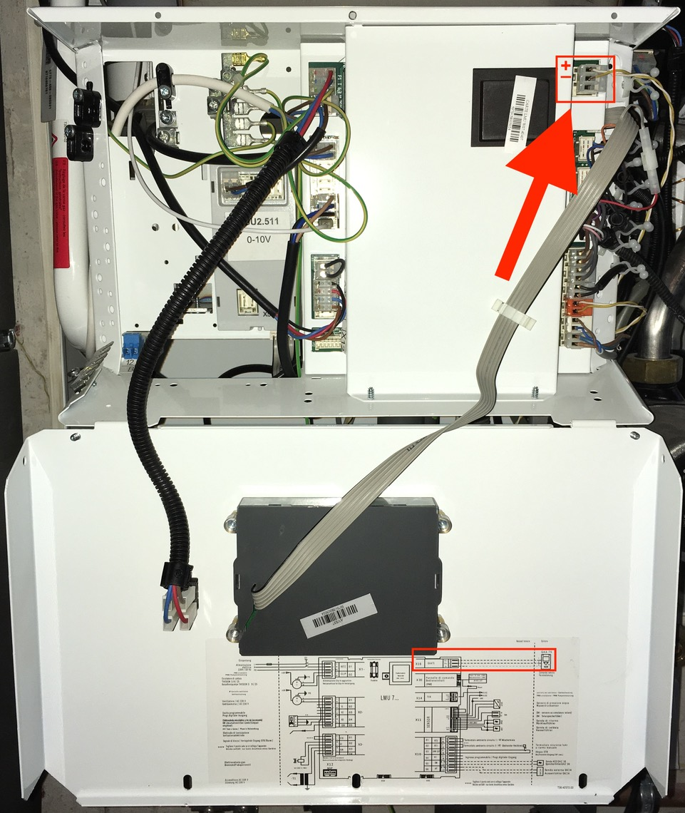 | Connexion BSB : + = Haut - = Centre Connexion LPB : via le plugin OCI420 supplémentaire |
| RVA33 | 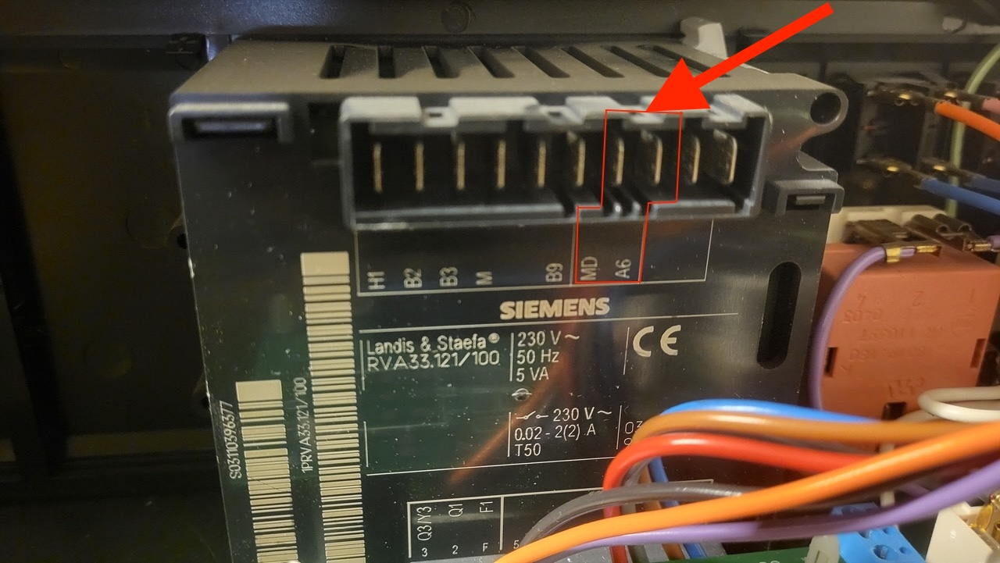 | Connexion PPS : A6/MD |
| RVA53 | 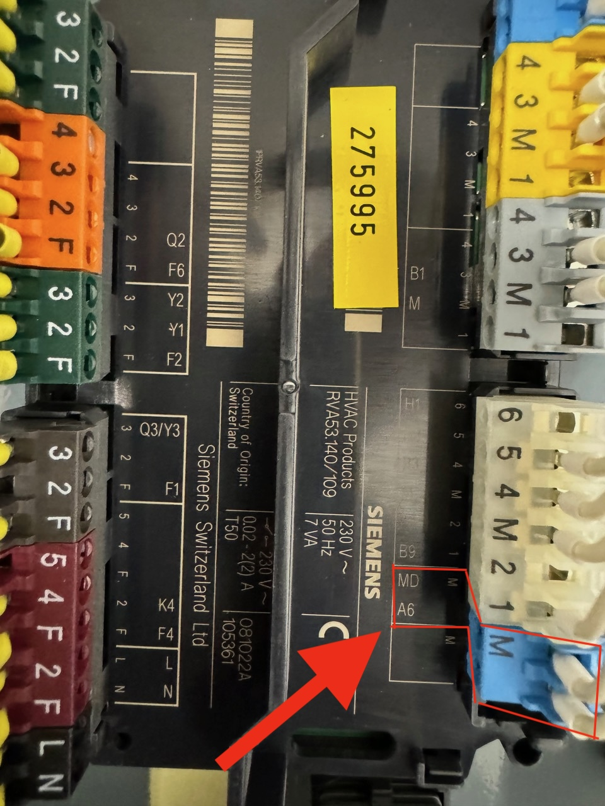 | Connexion PPS : A6/MD |
| RVA63 |  |
Connexion LPB : MB/DB Connexion PPS : A6/MD |
| RVD120 | 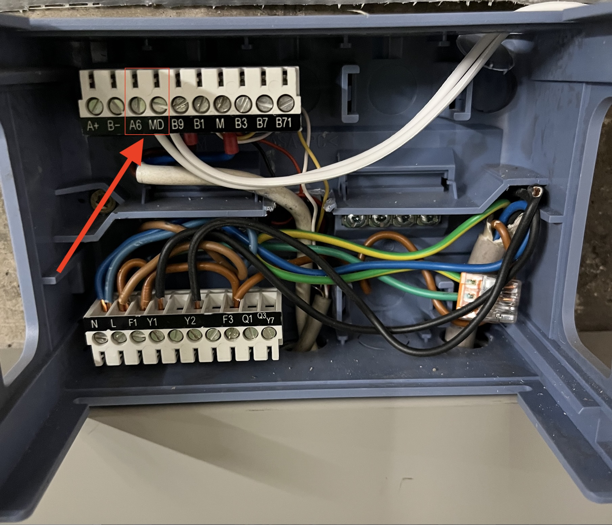 | Connexion PPS : A6/M |
| RVP54 |  |
Connexion PPS : A6/M |
| RVS13 | 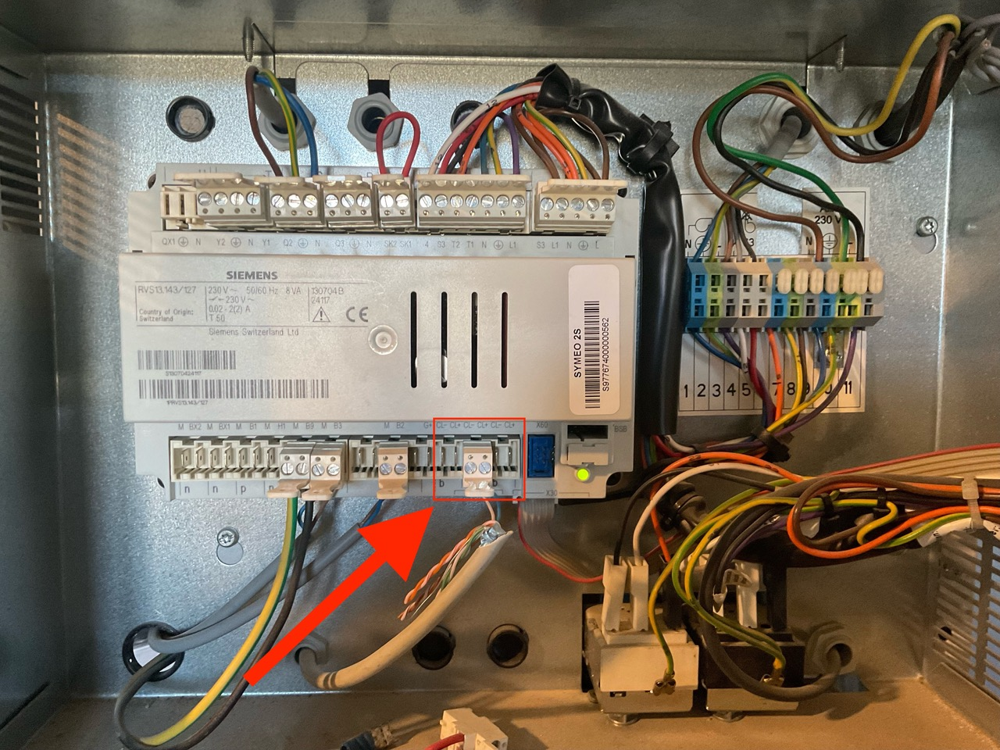 | Connexion BSB : CL+/CL- |
| RVS21 | 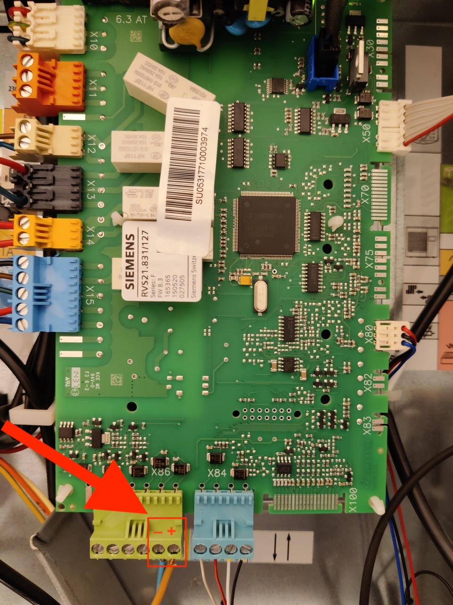 | Connexion BSB via le connecteur X86 + = broche la plus à droite - = deuxième broche à partir de la droite S’il y a une étiquette te disant de connecter l’appareil aux broches 2 et 3 sur X86, IGNORE-LA ! C’est uniquement pour alimenter le Navilink A59, ce n’est pas une vraie sonde déportée avec communication ! |
| RVS21 avec AVS55 | 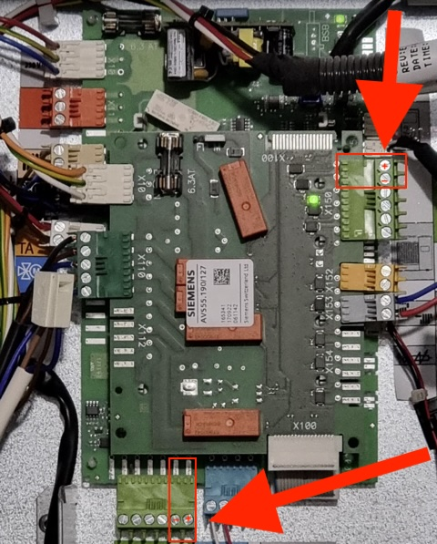 | Module d'extension AVS55, placé sur le dessus du RVS21. Connexion BSB via le connecteur X86 : + = broche la plus à droite - = deuxième broche à partir de la droite ou via le connecteur X150 : + = broche supérieure - = deuxième broche du haut S’il y a une étiquette te disant de connecter l’appareil aux broches 2 et 3 sur X86, IGNORE-LA ! C’est uniquement pour alimenter le Navilink A59, ce n’est pas une vraie sonde déportée avec communication ! |
| RVS23 | 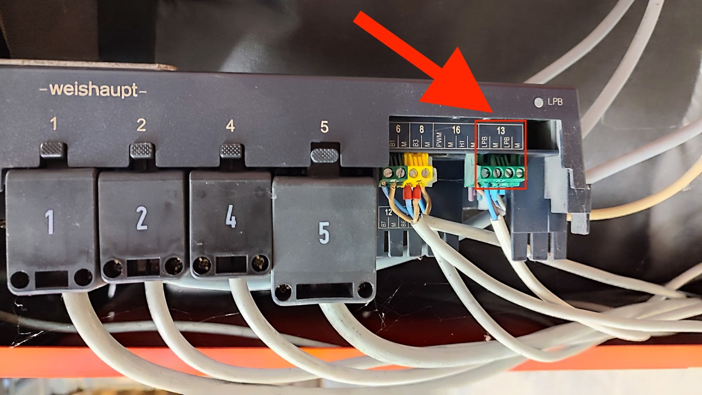 | Connexion LPB : LPB/M |
| RVS41 |  |
Connexion BSB : CL+/CL- Connexion LPB : MB/DB |
| RVS43 LOGON B |
 |
Connexion BSB : CL+/CL- Connexion LPB : MB/DB |
| RVS46 ISR-ZR1 |
 |
Connexion BSB : CL+/CL- Connexion LPB : MB/DB |
| RVS46 |  |
Connexion BSB : CL+/CL- Connexion LPB : MB/DB |
| RVS51 |  |
Connexion BSB : CL+/CL- |
| RVS53 | 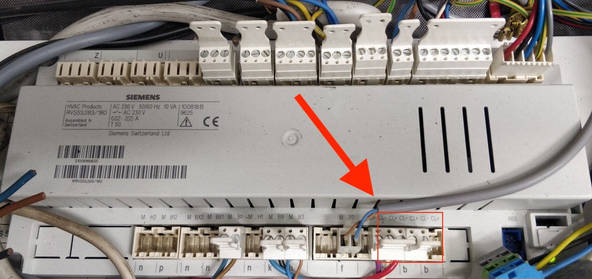 | Connexion BSB : CL+/CL- |
| RVS61 |  |
Connexion BSB : CL+/CL- Connexion LPB : MB/DB |
| RVS63 | 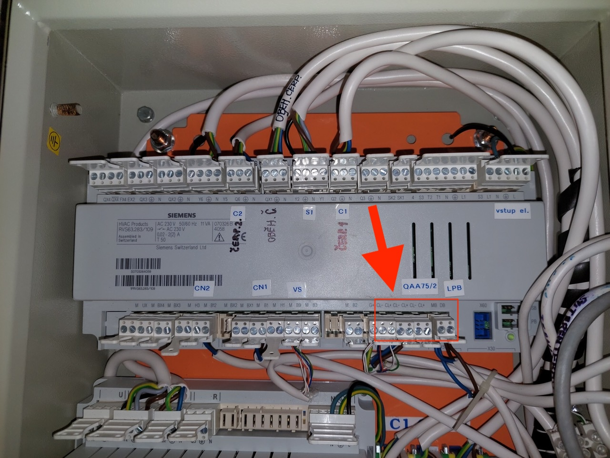 | Connexion BSB : CL+/CL- Connexion LPB : MB/DB |
| RVS65 |  |
Connexion BSB : CL+/CL- Connexion LPB : MB/DB |
Paramètres de configuration pour OCI420
Faire fonctionner correctement l'OCI420 peut s'avérer un peu difficile s'il ne fait pas déjà partie d'un réseau LPB existant. Si tu connectes l'OCI420 pour la première fois à ton appareil de chauffage et que tu n'as aucun autre appareil de chauffage LPB, tu obtiendras très probablement l'"erreur 81" qui indique qu'il y a une erreur de bus. Mais ne t'inquiète pas, il s'agit très probablement de configurer quelques paramètres pour le faire fonctionner. Pour le LMU64, le paramètre correspondant est 604 (LPBKonfig0). Il doit être défini comme suit pour utiliser BSB-LAN comme seul appareil connecté à l'OCI420 :
604.0 = 0
604.1 = 1
604.2 = 1
604.3 = 1
604.4 = 1
604.5 = 0
604.6 = 0
604.7 = 0
Ensuite, tu dois définir l'adresse LPB de l'OCI420 dans les paramètres 605 (doit être défini sur 1) et 606 (doit être défini sur 0). Par la suite, il ne devrait plus y avoir de message d'erreur et la LED rouge de l'OCI420 devrait clignoter à intervalles réguliers, et tu es prêt à connecter et à utiliser BSB-LAN.
Attention : Si l'OCI420 est déjà connecté à un autre appareil LPB, n'apporte aucune modification ici et connecte plutôt BSB-LAN à l'autre appareil LPB. Il devrait fonctionner sans aucun réglage.
Liste des modèles de contrôleurs fonctionnels
Il existe de nombreux autres contrôleurs qui sont susceptibles de fonctionner avec BSB-LAN. Fais attention à ces modèles de contrôleurs Siemens dans ton système de chauffage :
AVS37, AVS55, AVS71, AVS74, AVS75, AVS77, AVS79, LMS14, LMS15, LMU54, LMU64, LMU74, LMU75, RVA33, RVA36, RVA43, RVA46, RVA47, RVA53, RVA60, RVA61, RVA63, RVA65, RVA66, RVC32, RVD110, RVD115, RVD120, RVD125, RVD130, RVD135, RVD139, RVD140, RVD144, RVD145, RVD230, RVD235, RVD240, RVD245, RVD250, RVD255, RVD260, RVD265, RVL469, RVL470, RVL471, RVL472, RVL479, RVL480, RVL481, RVL482, RVP340, RVP350, RVP351, RVP360, RVP361, RVP54, RVP5xx, RVS13, RVS21, RVS23, RVS26, RVS41, RVS43, RVS46, RVS47, RVS51, RVS53, RVS61, RVS63, RVS65, RVS68, RWI65, WRI80
Attention : Le Siemens LMU34 n’est PAS compatible avec BSB-LAN, car ce contrôleur dispose uniquement d’une interface OpenTherm.